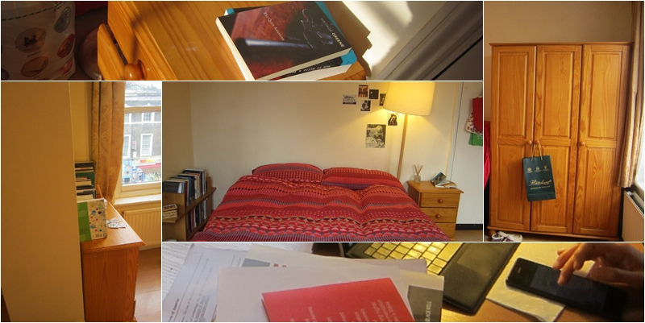

In Douglas's (1991)1 writing about home, she emphasizes the everyday rituals the family members carry out in the confined space, particularly during meals. Home is also a place where rules are established in order to coordinate resources among family members.
My participant lives alone in London, a home she sets up for herself away from her parents' control. The communal aspect of home living was not observable in the research. However, her parents' influence was still strong in the ways she inhabited the space, namely her habitus.
For instance, C liked to sit on the chair facing the door. In C's childhood memories, she was constantly frightened by her mother's entrance into the bedroom without knocking on the door first. Thus, she would make sure that she sat in the direction which allowed her to see the incomers to her room. This example reaffirms Bachelard's (1994)2 argument that childhood memories are inscribed in the spatial layout of the home.

Furthermore, one can use the home space to reconstruct personal histories through collections of objects. C's books are a testimony to her Taiwanese origin and her ongoing quest for knowledge in her discipline in an English-speaking world.
Finally, home is both a place which contains objects C draws comfort from and a place ideal for writing. It is both comfortable and resourceful. Occasional disruptions may breach feelings of comfort3, but C would ensure that the space return to the ideal state according to her criteria. In short, home also signifies a state of mind.